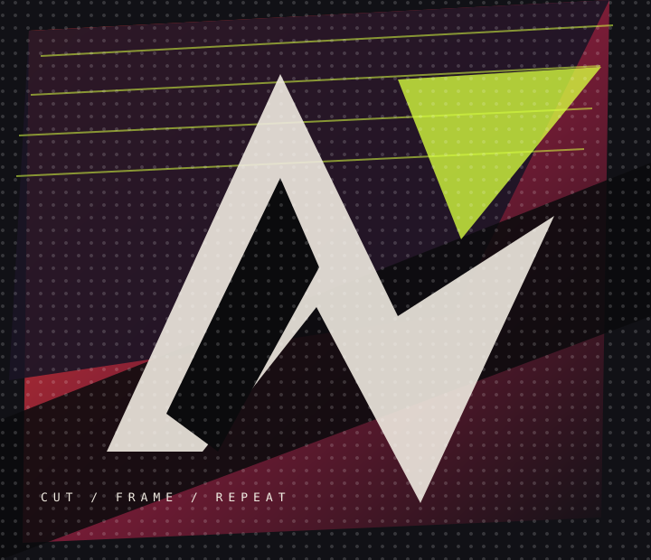

Release notes,
read aloud.
Tap play for a tight, spoiler-aware audio brief on every new drop.
Browse audio briefs →MANGA SIGNAL / LIVE FEED
A nocturnal shelf for new manga, summarized release podcasts, and long-form listening when your eyes need a break.

Tap play for a tight, spoiler-aware audio brief on every new drop.
Browse audio briefs →Opt into the long audiobook lane when you want the full atmosphere.
Open the reader →Support the studio and keep the ink moving with an age-gated contribution.
See support options →FRESH INK / 03
The city forgets a face. The face remembers everything.
A dead temple rings once for every lie left unsaid.
Every rewind leaves a bruise in the timeline.
THE MUSE METHOD
We make the next read easy to find and easier to feel. Listen to the signal, follow the line, stay for the final frame.
Read the manifesto